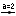

En relación con integrales, GeoGebra ofrece la posibilidad de visualizar como rectángulos, las sumas inferior y superior de una función. Basta ingresar las siguientes líneas como entradas en el campo de texto (pulsando Enter al finalizar cada línea).
f(x) = x^2/4 + 2
a = 0
b = 2
n = 5
L = SumaInferior[f, a, b, n]
U = SumaSuperior[f, a, b, n]
Cambiando a, b o n (ver Animación; ver modo  Desliza) se puede evidenciar la influencia de estos parámetros sobre las suma inferior y la superior. Para el incremento del número n se podría seleccionar 1 (dando clic con el botón derecho (MacOS: Apple + clic) sobre el n y seleccionando Propiedades.
La integral definida se puede exponer, apelando al comando correspondiente, como se anota a continuación:
Integral[f, a, b]
La antiderivada F se crea usando:
F = Integral[f].
Related Topics